close all
for i = 1:7
PdataFile = sprintf('Pdata%d.mat', i);
SdataFile = sprintf('Sdata%d.mat', i);
GdataFile = sprintf('Gdata%d.mat', i);
hasPdata = exist(PdataFile, 'file');
hasSdata = exist(SdataFile, 'file');
hasGdata = exist(GdataFile, 'file');
if hasPdata || hasSdata || hasGdata
if hasPdata
Pdata = load(PdataFile);
fprintf('Loaded: %s\n', PdataFile);
else
Pdata = [];
fprintf('Missing: %s\n', PdataFile);
end
if hasSdata
Sdata = load(SdataFile);
fprintf('Loaded: %s\n', SdataFile);
else
Sdata = [];
fprintf('Missing: %s\n', SdataFile);
end
if hasGdata
Gdata = load(GdataFile);
fprintf('Loaded: %s\n', GdataFile);
else
Gdata = [];
fprintf('Missing: %s\n', GdataFile);
end
plotPhantomSimulation(Pdata, Sdata, Gdata, sprintf('DataSet%d', i));
else
fprintf('Skipping dataset %d - no data files exist\n', i);
end
end
function plotPhantomSimulation(Pdata, Sdata, Gdata, figPrefix)
hasPdata = ~isempty(Pdata);
hasSdata = ~isempty(Sdata);
hasGdata = ~isempty(Gdata);
if hasPdata
PqDes = Pdata.Pdata(:,1:3);
PqdDes = Pdata.Pdata(:,4:6);
PqAct = Pdata.Pdata(:,7:9);
PqdAct = Pdata.Pdata(:,10:12);
end
if hasSdata
Stime = Sdata.tOpt;
if hasPdata
Ptime = linspace(0, Stime(end), length(PqAct));
end
end
if hasGdata
Gtime = Gdata.Hys;
end
if hasSdata
SqDes = Sdata.yOpt(:,1:3);
SqdDes = Sdata.yOpt(:,4:6);
SqAct = Sdata.yOpt(:,7:9);
SqdAct = Sdata.yOpt(:,10:12);
end
if hasGdata
GqDes = Gdata.yOut1(:,1:3);
GqdDes = Gdata.yOut1(:,4:6);
GqAct = Gdata.yOut1(:,7:9);
GqdAct = Gdata.yOut1(:,10:12);
end
if hasSdata
xTarget = Sdata.xTarget;
else
xTarget = [];
end
if hasSdata
[SxDes,SyDes,SzDes] = FK(SqDes(:,1),SqDes(:,2),SqDes(:,3));
[SxAct,SyAct,SzAct] = FK(SqAct(:,1),SqAct(:,2),SqAct(:,3));
end
if hasPdata
[PxAct,PyAct,PzAct] = FK(PqAct(:,1),PqAct(:,2),PqAct(:,3));
end
if hasGdata
[GxDes,GyDes,GzDes] = FK(GqDes(:,1),GqDes(:,2),GqDes(:,3));
[GxAct,GyAct,GzAct] = FK(GqAct(:,1),GqAct(:,2),GqAct(:,3));
end
if ~isempty(xTarget)
nTargets = size(xTarget, 1);
TargetMinSim = zeros(nTargets, 1);
TargetMinPthm = zeros(nTargets, 1);
TargetMinGain = zeros(nTargets, 1);
for i = 1:nTargets
if hasSdata
diffsSim = [SxAct, SyAct, SzAct] - xTarget(i, :);
TargetMinSim(i) = min(sqrt(sum(diffsSim.^2, 2)));
end
if hasPdata
diffsPthm = [PxAct, PyAct, PzAct] - xTarget(i, :);
TargetMinPthm(i) = min(sqrt(sum(diffsPthm.^2, 2)));
end
if hasGdata
diffsGain = [GxAct, GyAct, GzAct] - xTarget(i, :);
TargetMinGain(i) = min(sqrt(sum(diffsGain.^2, 2)));
end
end
else
nTargets = 0;
TargetMinSim = [];
TargetMinPthm = [];
TargetMinGain = [];
end
fig1 = figure; hold on; grid on; view(3);
plotHandles = [];
plotLabels = {};
hStart = plot3(0, 0, 0, 'o', 'LineWidth', 2, 'MarkerSize', 5, 'DisplayName', 'Start Point');
hEnd = plot3(Sdata.xFinal(1),Sdata.xFinal(2),Sdata.xFinal(3), 'o', 'LineWidth', 2, 'MarkerSize', 5, 'DisplayName', 'End Point');
plotHandles = [plotHandles, hStart, hEnd];
plotLabels = [plotLabels, {'Start Point', 'End Point'}];
if hasSdata
hDesired = plot3(SxDes, SyDes, SzDes, 'b', 'LineWidth', 2, 'DisplayName', 'Desired Position');
hSim = plot3(SxAct, SyAct, SzAct, 'r', 'LineWidth', 2, 'DisplayName', 'Simulation Trajectory');
plotHandles = [plotHandles, hDesired, hSim];
plotLabels = [plotLabels, {'Desired Position', 'Simulation Trajectory'}];
end
if hasPdata
hPhantom = plot3(PxAct, PyAct, PzAct, 'g', 'LineWidth', 2, 'DisplayName', 'Phantom Trajectory');
plotHandles = [plotHandles, hPhantom];
plotLabels = [plotLabels, {'Phantom Trajectory'}];
end
if hasGdata
hGain = plot3(GxAct, GyAct, GzAct, 'm', 'LineWidth', 2, 'DisplayName', 'Gain Trajectory');
plotHandles = [plotHandles, hGain];
plotLabels = [plotLabels, {'Gain Trajectory'}];
end
if ~isempty(xTarget)
targetHandles = gobjects(nTargets,1);
targetLabels = cell(nTargets,1);
for k = 1:nTargets
targetHandles(k) = plot3(xTarget(k,1), xTarget(k,2), xTarget(k,3), 'p', ...
'MarkerSize', 12, 'MarkerFaceColor', 'k', ...
'DisplayName', sprintf('Target Point %d', k));
targetLabels{k} = sprintf('Target Point %d', k);
end
plotHandles = [plotHandles, targetHandles(:)'];
plotLabels = [plotLabels, targetLabels(:)'];
else
targetHandles = [];
targetLabels = {};
end
if hasSdata && isfield(Sdata, 'xCtrl')
xCtrl = Sdata.xCtrl;
hCtrl = plot3(xCtrl(:,1), xCtrl(:,2), xCtrl(:,3), 'd', 'LineWidth', 1.5, ...
'MarkerSize', 6, 'DisplayName', 'Control Points');
ctrlLabel = {'Control Points'};
ctrlHandles = hCtrl;
plotHandles = [plotHandles, ctrlHandles];
plotLabels = [plotLabels, ctrlLabel];
else
ctrlLabel = {};
ctrlHandles = [];
end
errorHandles = [];
errorLabels = {};
if ~isempty(xTarget)
for k = 1:nTargets
if hasSdata
errorHandles(end+1) = plot(nan, nan, 'w');
errorLabels{end+1} = sprintf('Target %d Sim Err: %.6f', k, TargetMinSim(k));
end
if hasPdata
errorHandles(end+1) = plot(nan, nan, 'w');
errorLabels{end+1} = sprintf('Target %d Pthm Err: %.6f', k, TargetMinPthm(k));
end
if hasGdata
errorHandles(end+1) = plot(nan, nan, 'w');
errorLabels{end+1} = sprintf('Target %d Gain Err: %.6f', k, TargetMinGain(k));
end
end
end
allHandles = [plotHandles, errorHandles];
allLabels = [plotLabels, errorLabels];
legend(allHandles, allLabels, 'Location', 'eastoutside');
xlabel('X axis (m)');
ylabel('Y axis (m)');
zlabel('Z axis (m)');
title('3D Cartesian Space Position');
saveas(fig1, sprintf('%s_3D_Trajectory.png', figPrefix));
saveas(fig1, sprintf('%s_3D_Trajectory.fig', figPrefix));
if hasPdata || hasSdata || hasGdata
fig2 = figure;
for i = 1:3
subplot(3,1,i); grid on; hold on;
subplotHandles = [];
subplotLabels = {};
if hasPdata
plot(Ptime, PqAct(:,i), 'r-', 'LineWidth', 1.2);
subplotHandles(end+1) = plot(Ptime, PqAct(:,i), 'r-', 'LineWidth', 1.2);
subplotLabels{end+1} = 'Phantom Actual';
end
if hasSdata
plot(Stime, SqDes(:,i), 'g-', 'LineWidth', 1.2);
plot(Stime, SqAct(:,i), 'b-', 'LineWidth', 1.2);
subplotHandles(end+1) = plot(Stime, SqDes(:,i), 'g-', 'LineWidth', 1.2);
subplotHandles(end+1) = plot(Stime, SqAct(:,i), 'b-', 'LineWidth', 1.2);
subplotLabels{end+1} = 'Simulation Desired';
subplotLabels{end+1} = 'Simulation Actual';
end
if hasGdata
plot(Gtime, GqAct(:,i), 'm-', 'LineWidth', 1.2);
subplotHandles(end+1) = plot(Gtime, GqAct(:,i), 'm-', 'LineWidth', 1.2);
subplotLabels{end+1} = 'Gain Actual';
end
title(sprintf('Joint %d Position', i));
if i == 3, xlabel('Time'); end
ylabel('Position(rad)');
legend(subplotHandles, subplotLabels);
end
end
saveas(fig2, sprintf('%s_Joint_Position.png', figPrefix));
saveas(fig2, sprintf('%s_Joint_Position.fig', figPrefix));
if hasPdata || hasSdata || hasGdata
fig3 = figure;
for i = 1:3
subplot(3,1,i); grid on; hold on;
subplotHandles = [];
subplotLabels = {};
if hasPdata
plot(Ptime, PqdAct(:,i), 'r-', 'LineWidth', 1.2);
subplotHandles(end+1) = plot(Ptime, PqdAct(:,i), 'r-', 'LineWidth', 1.2);
subplotLabels{end+1} = 'Phantom Actual';
end
if hasSdata
plot(Stime, SqdDes(:,i), 'g-', 'LineWidth', 1.2);
plot(Stime, SqdAct(:,i), 'b-', 'LineWidth', 1.2);
subplotHandles(end+1) = plot(Stime, SqdDes(:,i), 'g-', 'LineWidth', 1.2);
subplotHandles(end+1) = plot(Stime, SqdAct(:,i), 'b-', 'LineWidth', 1.2);
subplotLabels{end+1} = 'Simulation Desired';
subplotLabels{end+1} = 'Simulation Actual';
end
if hasGdata
plot(Gtime, GqdAct(:,i), 'm-', 'LineWidth', 1.2);
subplotHandles(end+1) = plot(Gtime, GqdAct(:,i), 'm-', 'LineWidth', 1.2);
subplotLabels{end+1} = 'Gain Actual';
end
title(sprintf('Joint %d Velocity', i));
if i == 3, xlabel('Time'); end
ylabel('Velocity rad/s');
legend(subplotHandles, subplotLabels);
end
end
saveas(fig3, sprintf('%s_Joint_Velocity.png', figPrefix));
saveas(fig3, sprintf('%s_Joint_Velocity.fig', figPrefix));
end
Loaded: Pdata1.mat
Loaded: Sdata1.mat
Missing: Gdata1.mat
Loaded: Pdata2.mat
Loaded: Sdata2.mat
Missing: Gdata2.mat
Loaded: Pdata3.mat
Loaded: Sdata3.mat
Missing: Gdata3.mat
Loaded: Pdata4.mat
Loaded: Sdata4.mat
Missing: Gdata4.mat
Loaded: Pdata5.mat
Loaded: Sdata5.mat
Missing: Gdata5.mat
Loaded: Pdata6.mat
Loaded: Sdata6.mat
Missing: Gdata6.mat
Loaded: Pdata7.mat
Loaded: Sdata7.mat
Missing: Gdata7.mat
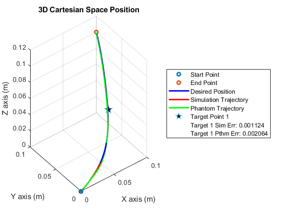 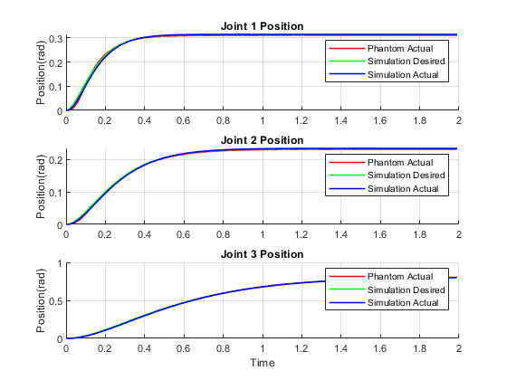 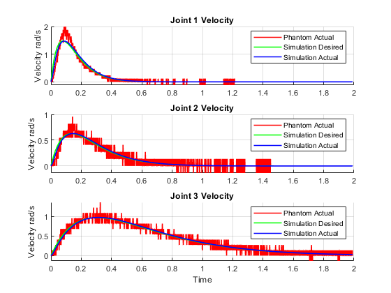 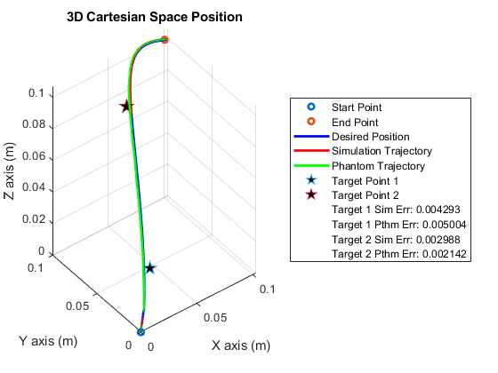 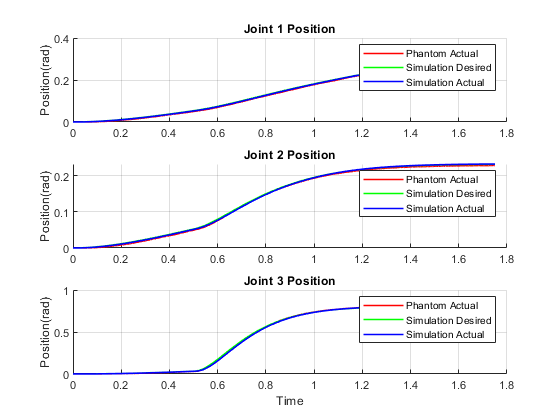 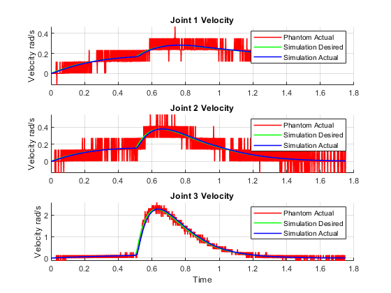 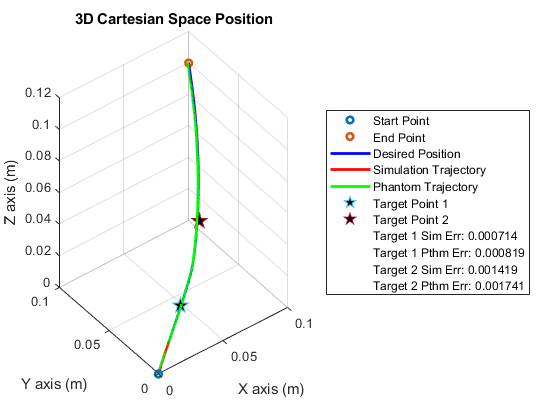 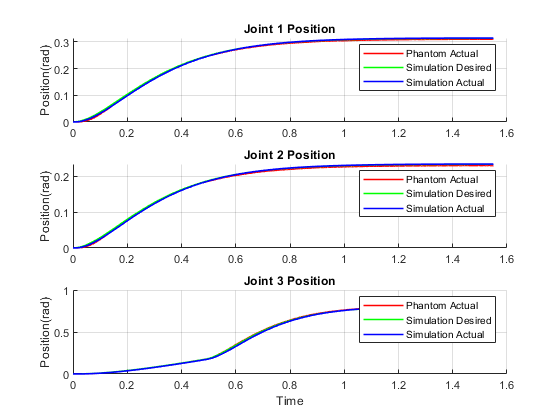 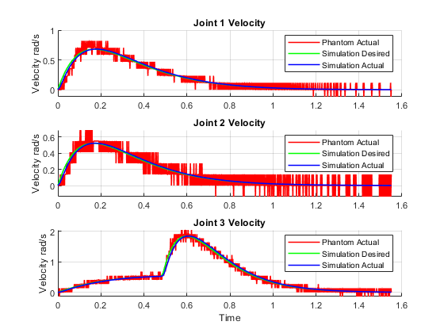 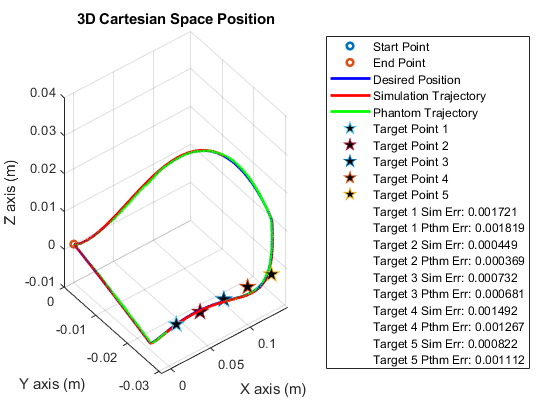 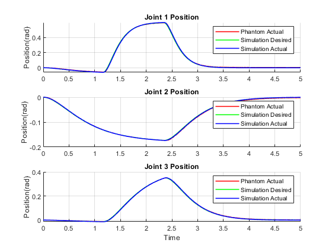 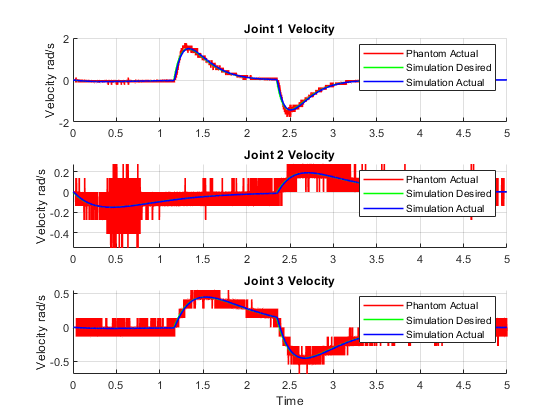 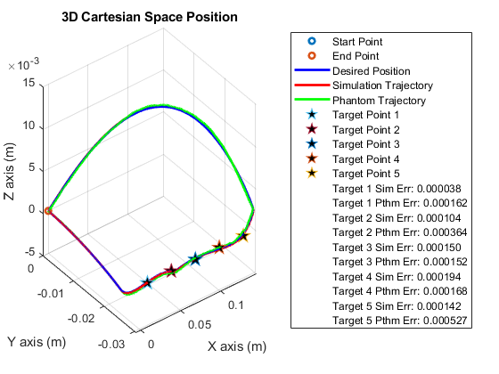 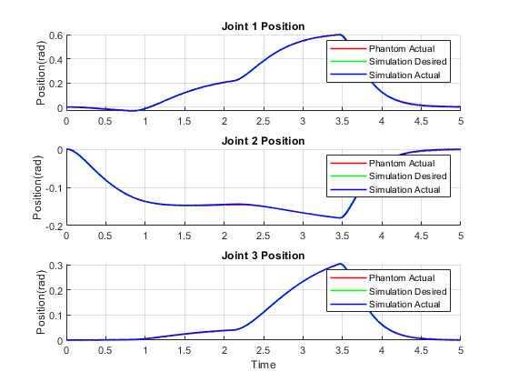 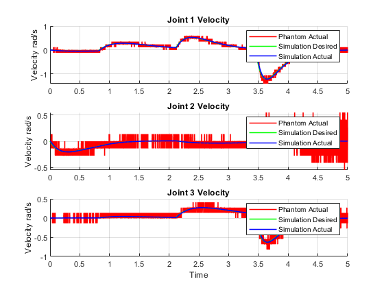 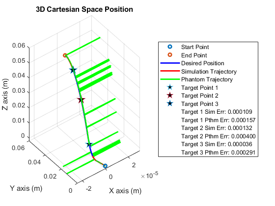 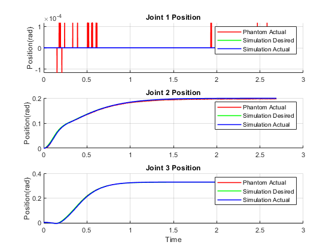 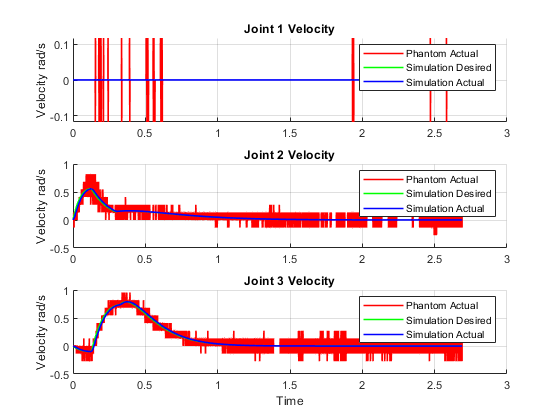 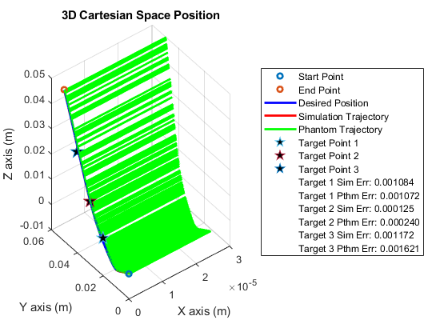 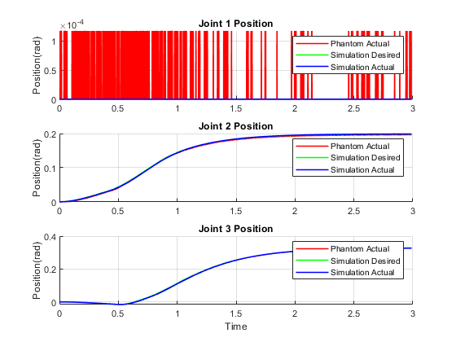 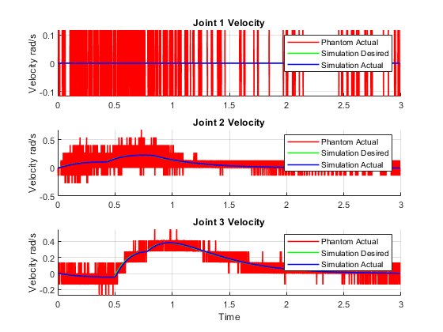